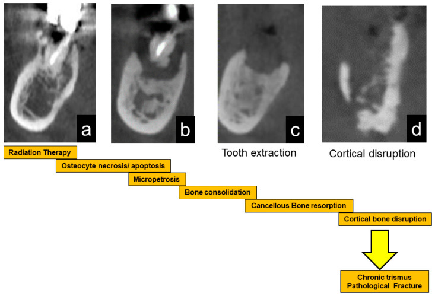
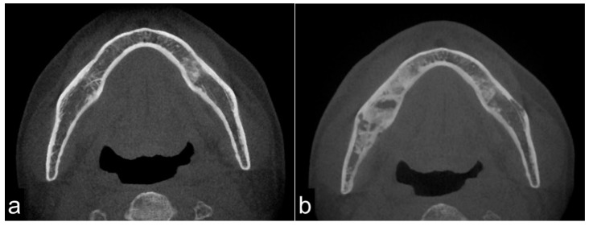
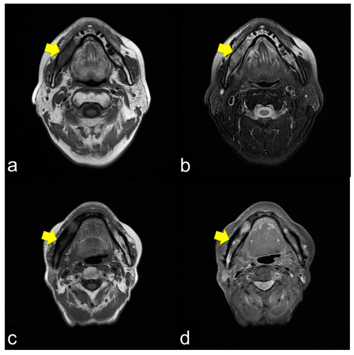
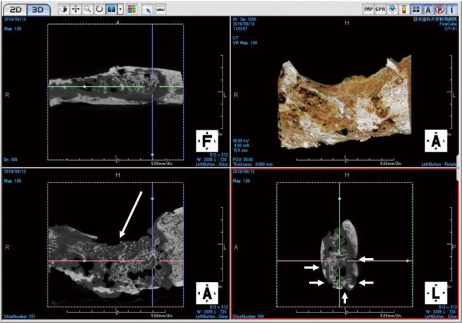
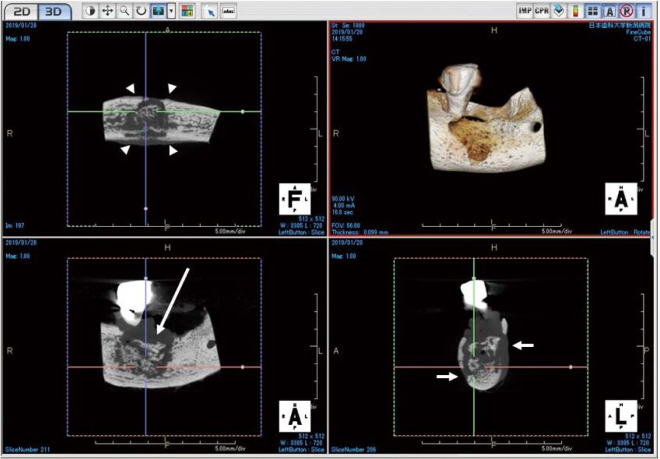

3138 — Hoại tử xương hàm dưới sau xạ trị / Mandibular osteoradionecrosis (ORN)
Tags: pattern:hoai-tu-xuong pattern:manh-xuong-chet pattern:xo-cung pattern:tieu-xuong-vo pattern:viem-sau-xa pattern:co-trismus vung:ham-duoi vung:rang-ham-mat vung:dau-co score:Notani score:He protocol:CT-xuong-ham protocol:CBCT protocol:MRI-dau-co protocol:PET-CT incidentaloma:khong
Mức chắc chắn (certainty): tổng hợp y văn (literature synthesis) — dựng từ đoàn hệ hình ảnh 45 bệnh nhân/48 vị trí (J Clin Med 2021, PMC8538245, CC BY 4.0), đoàn hệ 250 bệnh nhân (Acta Oncol 2024, PMC11332527, CC BY 4.0), RCT HOPON (Int J Radiat Oncol Biol Phys 2019, PMID 30851351), gộp 2 RCT HBO (Acta Oncol 2022, PMID 34843843, CC BY), so sánh CBCT ORN – MRONJ (Imaging Sci Dent 2021, PMC8007393, CC BY-NC), FDG-PET/CT phân biệt tái phát (EJNMMI Res 2023, PMC10070584, CC BY), tổng quan hệ thống PENTO (Med Oral Patol Oral Cir Bucal 2023, PMC10181025, CC BY). Nhóm không có bệnh nhân của mình; chỗ chưa đủ chắc ghi "chưa rõ". Không ghi tên tác giả — attribution dùng tạp chí + năm + PMCID.
Câu chốt: ORN hàm dưới là hoại tử xương do xạ chứ không phải "viêm tủy xương thông thường": xương mất tế bào tạo xương và mạch máu, nên chỉ cần một kích thích nhỏ (nhổ răng, hàm giả cọ, nhiễm răng) là không lành. Ba con số phải thuộc: (1) tỉ lệ 3–6% ở thời IMRT (4% = 10/250 bệnh nhân; 18,8% ca khởi phát sau nhổ răng); (2) liều xương hàm trung bình 64,3 Gy (40–95), và Dmean hàm dưới > 40 Gy làm nguy cơ tăng HR 5,93 (95% CI 1,27–27,8); (3) hình ảnh chốt là xơ hóa không đồng nhất (62,5%) + tiêu xương vỏ + mảnh xương chết, và phản ứng màng xương chỉ 8,3% — trái ngược hoàn toàn với MRONJ (7/7 = 100% có phản ứng màng xương). Thời điểm khởi phát trải 1 tháng đến hơn 10 năm (trung bình 54,9 ± 44,1 tháng trong một đoàn hệ; trung vị 6 tháng trong đoàn hệ khác).
1. Tổng quan bệnh học – cơ chế hình ảnh
1.1 TẠI SAO xương đã xạ lại "chết dần" — ba tầng tổn thương
- Tầng mạch máu (radiation arteritis): tia xạ làm tổn thương tế bào nội mô → viêm nội mạc tăng sinh → hẹp và tắc dần các nhánh nuôi xương (động mạch lỗ chân răng, nhánh màng xương). Mô hình kinh điển "3H" của Marx: hypoxia – hypovascularity – hypocellularity (PMC8538245). Xương hàm dưới đặc biệt dễ vì nuôi dưỡng chủ yếu qua màng xương và một trục mạch dọc ống hàm dưới, không có tuần hoàn bàng hệ phong phú như xương dài.
- Tầng tế bào: tia xạ giết tế bào tạo xương (osteoblast), tế bào xương (osteocyte) và nguyên bào sợi tủy; ổ khuyết tế bào không được thay thế → xương không còn khả năng sửa chữa vi chấn thương. Đây là lý do ORN tiến triển chậm, không mủ ồ ạt như viêm tủy cấp, nhưng không bao giờ lành nếu chỉ dùng kháng sinh.
- Tầng xơ hóa (radiation-induced fibrosis — Delanian): xạ hoạt hóa TGF-β1, tăng nguyên bào sợi → tăng sinh cơ trơn và myofibroblast, lắng đọng collagen, teo mô mỡ và mạch máu. Kết quả là mô xơ, cứng, nghèo tế bào — mô hình này giải thích vì sao PENTO/PENTOCLO (pentoxifylline + tocopherol) có cơ sở sinh học: chống xơ, chống oxy hóa, chứ không phải "diệt khuẩn".
- Trình tự lâm sàng – hình ảnh (sơ đồ gốc của bài): xạ → xơ hóa xương (a) → niêm mạc mỏng, xương chết lộ ra (b) → kích thích (nhổ răng) gây nhiễm và tiêu xương chết (c) → vỏ xương vỡ, viêm lan vào cơ nhai gây trismus (d) → cuối cùng gãy xương bệnh lý (PMC8538245, Fig. 5).

1.2 TẠI SAO hình ảnh trông như vậy (vật lý HU – T1 – T2)
- CT — vì sao "xơ hóa" lại sáng hơn: xương xốp bình thường là bè xương + tủy mỡ. Sau xạ, tủy mỡ bị thay bằng mô xơ và xương phản ứng dày bè, nên hệ số suy giảm tia tăng → vùng xương đặc hơn, "trắng" hơn trên cửa sổ xương. Trong đoàn hệ 48 vị trí: xơ hóa đồng nhất 20,8%, xơ hóa không đồng nhất 62,5%, tiêu xương 12,5% (PMC8538245). Điểm mấu chốt: ORN không tạo phản ứng màng xương (chỉ 8,3%) vì màng xương đã xơ và nghèo mạch — khác xương viêm nhiễm khuẩn.
- MRI — vì sao T1 luôn tối: tủy mỡ bình thường giàu proton mỡ, T1 rất ngắn → sáng. Khi tủy bị thay bằng xơ/nước/hoại tử, mất mỡ → T1 tối. Trong 42 bệnh nhân: T1 giảm tín hiệu 100% (đây là dấu nhạy nhất nhưng không đặc hiệu — chỉ nói "tủy đã bị thay"). T2 thì thay đổi theo thành phần: phù/nước nhiều → tăng tín hiệu đồng nhất 71,4% (thể viêm nhẹ); hỗn hợp xơ + phù + hoại tử → không đồng nhất 26,2% (thể viêm nặng); xơ đặc/hoại tử khô → giảm tín hiệu 2,4%. Bờ tổn thương không rõ vì quá trình lan dần trong tủy (PMC8538245).
- Vì sao cơ nhai dày và ngấm thuốc: viêm lan từ xương qua màng xương vào cơ cắn, cơ chân bướm trong → phù cơ, tăng tín hiệu T2 và ngấm thuốc; đây là nguyên nhân trismus, và là dấu hoạt động của ORN. Trismus gặp 39,6% toàn đoàn hệ, tăng theo độ: He 0: 25% → I: 15% → II: 44% → III: 83% (PMC8538245).
- Vì sao mảnh xương chết (sequestrum) "trơ" với mọi thứ: xương chết không còn mạch máu → không ngấm thuốc, không bắt FDG. Trong nghiên cứu PET/CT, vùng sequestrum không có uptake trong khi mô viêm quanh có SUVmax trung bình 7,69; xạ hình xương/SPECT bắt 94,4% tổn thương nhưng cũng trống ở vùng chết (PMC8538245).
1.3 Ngưỡng định lượng nằm lòng
| Chỉ số | Ngưỡng / giá trị | Nguồn |
|---|---|---|
| Tỉ lệ ORN | 3–6% thời IMRT; đoàn hệ 10/250 = 4%; tổng quan cũ 5–12% | PMC11332527; PMC10181025 |
| Liều xương hàm | trung bình 64,3 Gy (40–95); Dmean > 40 Gy: HR 5,93 (1,27–27,8; p = 0,002); nhổ răng ở vùng > 60 Gy là nguy cơ cao | PMC8538245; PMC11332527; PMC5761154 |
| Thời gian khởi phát | 1 tháng – > 10 năm; trung bình 54,9 ± 44,1 tháng (0–168) / 16,7 tháng, trung vị 6 tháng | PMC8538245; PMC11332527 |
| Yếu tố khởi phát | lộ xương tự nhiên 39,6%, nhiễm quanh răng 29,2%, nhổ răng 18,8%, implant 2,1% | PMC8538245 |
| Vị trí | hàm dưới 81,2%, hàm trên 18,8%; ưu thế vùng răng hàm–góc hàm | PMC8538245 |
| CT | xơ hóa không đồng nhất 62,5%, đồng nhất 20,8%, tiêu xương 12,5%, phản ứng màng xương 8,3% | PMC8538245 |
| MRI | T1 giảm 100%; T2 tăng đồng nhất 71,4%, không đồng nhất 26,2%, giảm 2,4% | PMC8538245 |
| Trismus | 39,6% chung; He III 83% | PMC8538245 |
| FDG-PET | uptake 85,7%, SUVmax trung bình 7,69; sequestrum không uptake | PMC8538245 |
| Ngưỡng tách tái phát u | voxel SUVmax trong xương (HU > 275); TLG > 62,68 g; tuổi ≤ 52 → score 2–3: HR 32,50 (8,51–124,18) | PMC10070584 |
2. Mẫu hình + chẩn đoán phân biệt theo vị trí (gamut)
- Mẫu hình (pattern) cốt lõi: trong trường chiếu xạ, một vùng xương hàm xơ hóa không đồng nhất, vỏ xương bị tiêu/mất liên tục, có mảnh xương chết (đảo tín hiệu, không ngấm thuốc), không có phản ứng màng xương, kèm dày và ngấm thuốc cơ nhai.
- Gamut theo vị trí (location):
- Xương ổ răng sau – góc hàm (posterior mandible/angle): vị trí điển hình nhất — nơi liều cao nhất, màng xương mỏng, dễ bị hàm giả cọ và nhổ răng.
- Thân hàm – vùng răng nanh: hay gặp sau nhổ răng; dễ gây gãy bệnh lý vì mất xương ổ.
- Lồi cầu – lên hàm (ramus/condyle): hiếm; lan lên khớp thái dương–hàm gây hạn chế há miệng nặng.
- Hàm trên (maxilla, 18,8%): dễ lan xoang hàm, hốc mắt, nền sọ — nguy hiểm hơn vì đường lan.
- Gamut theo nguyên nhân (mnemonic "XẠ – THUỐC – RĂNG – U – CHẤN THƯƠNG"):
- XẠ: ORN (bài này).
- THUỐC: MRONJ (bisphosphonate, denosumab, antiangiogenic).
- RĂNG: viêm tủy xương do răng, áp-xe quanh chóp, viêm xương xơ hóa.
- U: tái phát ung thư tại chỗ, ung thư thứ hai, sarcoma xương do xạ (tiềm tàng 18,3 năm — xem 272).
- CHẤN THƯƠNG: gãy xương bệnh lý, gãy do nhổ răng, mảnh xương gãy sau implant.
3. Bảng so sánh phân biệt (ma trận đối chiếu)
| Thực thể (entity) | Hình ảnh điển hình | Chốt vào (rule-in) | Chốt loại (rule-out) | Gợi ý xác nhận |
|---|---|---|---|---|
| ORN | Xơ hóa không đồng nhất + tiêu vỏ + sequestrum, không phản ứng màng xương; T1 tối, T2 tăng/không đồng nhất; cơ nhai dày | Tiền sử xạ ≥ 40–60 Gy vùng hàm + xương lộ > 3 tháng hoặc hình ảnh hoại tử trong trường chiếu + loại trừ tái phát | Có khối mô mềm thực sự, có hạch mới, đau/thần kinh tiến triển → nghi tái phát u, không phải ORN đơn thuần | CT ≤ 1 mm + MRI; sinh thiết chỉ khi nghi tái phát |
| MRONJ | Xơ hóa/tiêu xương + sequestrum + phản ứng màng xương (7/7 = 100%); vỏ xương dày phản ứng | Tiền sử bisphosphonate/denosumab/antiangiogenic, không xạ vùng hàm; mô học còn nguyên bào hủy xương (6/7 = 85,7%) | Có xạ vùng hàm + không dùng thuốc → nghiêng ORN | Ngừng thuốc theo phác đồ; CBCT so sánh; mô học nếu mổ |
| Viêm tủy xương do răng | Ổ tiêu quanh chóp, phản ứng màng xương rõ, mủ, lỗ rò; thường một răng nguyên nhân | Răng sâu/viêm tủy có ổ quanh chóp + đau khu trú + mủ; cấy dương | Không có ổ răng nguyên nhân, xơ hóa lan tỏa trong trường xạ → nghi ORN | X-quang quanh chóp/CBCT; nội nha |
| Tái phát ung thư tại chỗ | Khối mô mềm không tương xứng, phá vỏ, xâm lấn cơ/cân, hạch mới; FDG tập trung đặc, TLG cao | Khối đặc + di lệch mô + hạch + đau/thần kinh (tê môi, liệt mặt); TLG > 62,68 g | Xơ hóa đối xứng trong trường chiếu, không khối, không hạch → nghiêng ORN | MRI cản quang + PET/CT; sinh thiết |
| Sarcoma xương do xạ | Khối hủy xương bờ rộng, vôi hóa/ngấm thuốc mạnh, tiềm tàng nhiều năm sau xạ | Hủy xương tiến triển nhanh, khối mô mềm lớn, bờ không rõ, sau > 10 năm | Xơ hóa ổn định nhiều năm → không phải sarcoma | MRI + sinh thiết (bắt buộc) |
| Gãy xương bệnh lý do ORN | Đường gãy qua vùng xơ hóa, di lệch, không có ổ tiêu mới | Đường gãy rõ + ORN nền | Đường "gãy" do artifact răng/kim loại → không di lệch | CT đa mặt phẳng |
| Viêm mô mềm quanh hàm đơn thuần | Dày cơ, phù, ngấm thuốc, xương bình thường | Phù/mủ mô mềm, không tiêu xương | Có tiêu xương/sequestrum → không đơn thuần | Siêu âm/CT; dẫn lưu |
- Ảnh ghép đối chiếu: không tạo composite — ảnh CBCT ORN và MRONJ là hai bệnh nhân khác nhau trong cùng nghiên cứu (CC BY-NC, phải giữ nguyên bản, không ghép).
4. Protocol chụp + hệ phân độ/điểm chuẩn hóa
4.1 Protocol
- CT xương hàm (MDCT): lát ≤ 1 mm, cửa sổ xương, tái tạo axial + coronal + sagittal (2,5 mm MPR là mức tối thiểu; nên 1 mm), FOV từ ổ mắt đến cằm. Đọc 5 dấu: (1) xơ hóa/đặc xương, (2) tiêu vỏ xương, (3) mảnh xương chết, (4) phản ứng màng xương (thường vắng), (5) khí/mảnh dị vật. CBCT (voxel 0,28 mm) đủ cho răng–xương ổ nhưng kém mô mềm.
- MRI 3T: T1W không cản quang (tủy mỡ bình thường sáng), T2W fat-sat/STIR (phù), T1W sau tiêm fat-sat (hoạt tính, lan cơ/nền sọ). Lát 3–4 mm. Giá trị: phân biệt phù tủy đơn thuần sau xạ với hoại tử, và phát hiện lan nền sọ/hốc mắt.
- PET/CT: không dùng thường quy để chẩn đoán ORN; dùng khi nghi tái phát/u thứ hai hoặc không phân định được trên MRI. Đọc vị trí voxel SUVmax (trong xương: HU > 275), TLG, và luôn so với phim cũ.
- Nội soi miệng + thăm khám răng: bắt buộc trước khi kết luận "ORN" — cần thấy xương lộ, lỗ rò, hoặc niêm mạc lành trên xương chết.
- Trước xạ trị (dự phòng): khám răng toàn diện, nhổ/chữa răng ổ nhiễm trước xạ ≥ 14 ngày, loại bỏ răng không tiên lượng được; sau xạ không đặt implant trong vùng > 60 Gy.
4.2 Phân độ (version + ngưỡng)
- Notani I–III (được CRUK/HOPON khuyến nghị làm tiêu chuẩn trong thử nghiệm, kèm thêm thể "mảnh xương nhỏ" — minor bone spicules, MBS, gặp 19% bệnh nhân để tránh tranh cãi):
- I: ORN khu trú trong xương ổ răng.
- II: ORN đến ngang/tới trên ống hàm dưới (chưa xuống dưới ống).
- III: ORN xuống dưới ống hàm dưới, gãy xương bệnh lý, rò miệng–da, hoặc xâm lấn bờ dưới hàm.
- He (dùng trong đoàn hệ hình ảnh, B = bone, S = soft tissue):
- B0: không dấu hoặc chỉ tiêu xương trên phim; B1: tổn thương < 2 cm**; **B2:** **> 2 cm; B3: gãy xương bệnh lý.
- S0: không khuyết niêm mạc/da; S1: khuyết niêm mạc miệng hoặc rò da; S2: khuyết xuyên thấu (miệng–da).
- Phân bố thực tế (48 vị trí): He 0 8,9%, I 27,1%, II 52,1%, III 12,5%; B2S1 (41,7%) là thể gặp nhiều nhất (PMC8538245).
4.3 Sơ đồ xử trí
flowchart TD
A["Xương hàm lộ > 3 tháng hoặc hình ảnh hoại tử trong trường xạ"] --> B["CT ≤ 1 mm + MRI: xác định mức xương, cơ nhai, nền sọ"]
B --> C{"Nghi tái phát u? khối mô mềm, hạch, tê môi/liệt mặt"}
C -->|Có| D["MRI cản quang + PET/CT và SINH THIẾT — không điều trị ORN mù"]
C -->|Không| E["Phân độ Notani/He"]
E --> F{"Có gãy bệnh lý, rò xuyên thấu, hoại tử lan rộng?"}
F -->|Không| G["Điều trị nội: vệ sinh, kháng sinh khi nhiễm, PENTO 400 mg ×2/ngày + tocopherol 400–500 IU ×2/ngày"]
G --> H{"Đáp ứng sau 3–6 tháng?"}
H -->|Có| I["Theo dõi 3–6 tháng, chụp lại khi triệu chứng đổi"]
H -->|Không| J["Cắt lọc xương chết / cắt đoạn hàm + tái tạo vạt xương mác"]
F -->|Có| J
D -->|Tái phát| K["Xử trí theo ung thư: mổ/xạ/hóa trị — KHÔNG chỉ cắt lọc"]
- Điều trị nội: vệ sinh miệng, chlorhexidine, kháng sinh chỉ khi có nhiễm; PENTO (pentoxifylline 400 mg ×2/ngày + tocopherol 400–500 IU ×2/ngày) — tổng quan 11 nghiên cứu: lành niêm mạc hoàn toàn 16,6–100%, cải thiện/ổn định 7,6–66,6%, tiến triển 7,6–32%; chưa có phác đồ chuẩn (PMC10181025).
- HBO — bằng chứng hiện tại KHÔNG ủng hộ thường quy: HOPON (144 người, 100 phân tích) cho ORN sau 6 tháng 6,4% (HBO) vs 5,7% (chứng), OR 1,13 (0,14–8,92), p = 1 → không dự phòng được (PMID 30851351). Gộp 2 RCT điều trị: lành 70% (21/30) vs 51% (18/35) nhưng không có ý nghĩa (thiếu lực — PMID 34843843). Vì vậy không hứa hẹn HBO với gia đình; PENTO + phẫu thuật là trục chính.
- Phẫu thuật: cắt lọc/sequestrectomy cho thể khu trú; cắt đoạn hàm + vạt xương mác tự do cho thể lan rộng/gãy. Ở ORN hai bên, biến chứng sau mổ ngay 33,3% khi mổ hai bên cùng thì; 46,2% bệnh nhân mổ một bên về sau phát triển ORN bên đối diện (PMID 34320577) — phải theo dõi cả hàm còn lại.
5. Biến thể bình thường và cạm bẫy
- "Xơ hóa sau xạ" không đồng nghĩa ORN: sau xạ, tủy mỡ có thể chuyển thành tủy xơ lan tỏa, đối xứng trong trường chiếu, T1 tối nhưng không có tiêu vỏ, không sequestrum, không đau. Đừng gọi ORN khi chưa có tiêu xương/sequestrum hoặc xương lộ.
- MBS (minor bone spicules): mảnh xương nhỏ < vài mm ở ổ răng sau nhổ, gặp 19% bệnh nhân HOPON — nhiều bác sĩ coi là ORN, nhiều người không; thêm MBS thành thể riêng để tránh chẩn đoán sai (PMID 28024727).
- Artifact kim loại/răng: streak làm giả "đường gãy" hoặc "tiêu vỏ"; luôn xem đa mặt phẳng và cửa sổ xương, so với răng bên đối diện.
- PET dương giả: viêm sau xạ và mô hạt bắt FDG mạnh — SUVmax chồng lấp giữa tái phát và ORN; sequestrum không bắt FDG nên PET có thể âm ở đúng vùng bệnh. Đừng dùng PET đơn thuần để loại trừ.
- Trismus không chỉ do xương: xơ hóa cơ chân bướm/cơ cắn sau xạ gây hạn chế há miệng dù xương chưa hoại tử — đừng mổ xương chỉ vì trismus.
- Cạm bẫy "satisfaction of search": thấy ổ răng sâu là dừng ở "viêm tủy xương do răng", bỏ qua khối mô mềm phía sau cùng bên — luôn đọc toàn bộ trường chiếu và hạch cổ.
- Hàm trên nguy hiểm hơn: ORN hàm trên có thể lan xoang hàm → hốc mắt → nền sọ; đau mắt, nhìn đôi, tê vùng V2 là red flag cần MRI khẩn.
6. Tự lượng giá — Blind Quiz ngay trên trang tĩnh
Ca 1 — Nam 64 tuổi, ung thư vùng hầu đã xạ 64 Gy cách 3 năm, đau góc hàm phải, há miệng hạn chế. Nhìn ảnh trước, mô tả trước.

- Gợi ý lâm sàng: không sốt, không khối sờ thấy, niêm mạc vùng góc hàm có điểm lộ xương nhỏ.
- Câu hỏi: Dấu hiệu chính ở (b)? Vì sao xương đặc hơn? Ba chẩn đoán phân biệt? Dấu hiệu nào chốt?
Bấm để hiện đáp án (findings + chẩn đoán)
- Dấu hiệu: (a) hàm dưới trước xạ có tủy xốp bình thường; (b) vùng thân–góc hàm phải có xơ hóa không đồng nhất (đặc xương từng ổ) xen vùng tiêu xương/khuyết vỏ, không thấy phản ứng màng xương, không có khối mô mềm lớn.
- Vì sao: tủy mỡ bị thay bằng mô xơ + bè xương phản ứng → tăng hệ số suy giảm tia; vỏ xương mất nuôi dưỡng nên tiêu dần.
- Chẩn đoán: ORN hàm dưới (He II/B2S0–S1 nếu có khuyết niêm mạc nhỏ) — nền xạ 64 Gy + xương lộ + hình ảnh điển hình.
- Phân biệt: MRONJ (không có tiền sử xạ, có phản ứng màng xương), viêm tủy xương do răng (ổ quanh chóp + phản ứng màng xương), tái phát u (khối mô mềm + hạch).
- Chốt: MRI thấy T1 tối, T2 tăng/không đồng nhất, cơ nhai dày; không có khối → ORN. Nếu có khối/hạch → sinh thiết.
- Nguồn ảnh: J Clin Med 2021, PMC8538245, Fig. 1, CC BY 4.0 (nguyên bản).
Ca 2 — Nữ 58 tuổi, xạ vùng miệng 60 Gy, đau hàm âm ỉ 8 tháng; MRI không cản quang:

- Câu hỏi: Chuỗi xung của (a) và (b)? Vì sao tủy xương tối trên T1? T2 nói gì về hoạt tính?
Bấm để hiện đáp án
- Chuỗi xung: (a, c) T1W — tủy xương vùng góc hàm phải giảm tín hiệu so với bên lành; (b, d) T2W — (b) tăng tín hiệu đồng nhất (viêm nhẹ), (d) không đồng nhất (viêm nặng/xơ xen phù).
- Vì sao T1 tối: tủy mỡ bình thường sáng trên T1; sau xạ mỡ bị thay bằng xơ/nước/hoại tử nên mất tín hiệu mỡ.
- T2 nói gì: tăng tín hiệu = còn phù/hoạt tính; giảm tín hiệu = xơ đặc/hoại tử khô, ít viêm. T2 không đồng nhất là thể hay gây trismus và tiến triển.
- Cạm bẫy: T1 tối một mình không đủ — sau xạ tủy có thể tối lan tỏa mà không hoại tử; cần tiêu vỏ/sequestrum/xương lộ.
- Nguồn ảnh: J Clin Med 2021, PMC8538245, Fig. 2 (phần a–d), CC BY 4.0 (nguyên bản).
Ca 3 — Hai bệnh nhân cùng "xương hàm tiêu + mảnh xương chết": bệnh nhân A xạ vòm họng 5 năm trước, bệnh nhân B dùng zoledronate 3 năm. Hai ảnh CBCT mẫu xương:


- Câu hỏi: Ảnh nào là ORN, ảnh nào là MRONJ? Dấu nào tách hai thể? Vì sao khác nhau?
Bấm để hiện đáp án
- Dấu hiệu: cả hai có xơ hóa + tiêu xương + sequestrum (mũi tên dài). Khác biệt: bệnh nhân B có phản ứng màng xương rõ (mũi tên đầu), bệnh nhân A thì không.
- Số liệu: CBCT mẫu: MRONJ 7/7 (100%) có phản ứng màng xương vs ORN 0/3 (0%), p < 0,05; mô học MRONJ còn nguyên bào hủy xương 6/7 (85,7%) vs ORN 0/3 (PMC8007393).
- Vì sao: màng xương trong ORN đã xơ, nghèo mạch nên không tạo xương phản ứng; trong MRONJ màng xương còn sống và phản ứng với viêm.
- Chẩn đoán: A = ORN (Fig. 3, có tiền sử xạ); B = MRONJ (Fig. 2, dùng bisphosphonate).
- Nguồn ảnh: Imaging Sci Dent 2021, PMC8007393, Fig. 3 (A) và Fig. 2 (B), CC BY-NC (nguyên bản, không chỉnh sửa).
Bài liên quan chéo
- 3104 – Hoại tử xương thái dương sau xạ vòm họng (cùng trường xạ, khác xương; xương lộ > 3 tháng)
- 1761 – Trismus sau xạ đầu cổ (trismus do xơ cơ, không nhất thiết do xương)
- 751 – Viêm xương hàm do răng (hàng phân biệt sát nhất: ổ răng nguyên nhân + phản ứng màng xương)
- 749 – Nhiễm khuẩn răng lan trung thất (đường lan nguy hiểm của ổ nhiễm hàm dưới)
- 272 – Sarcoma xương nền sọ do xạ (tiềm tàng 18,3 năm — red flag khi "ORN" tiến triển nhanh)
Ảnh
- Tên file theo quy ước
3138_orn_<Modality>_<PMCID>-f<so>.jpg; nguồn + giấy phép từng ảnh ởimages/CREDITS.md. - 3 ảnh CT/MRI/sơ đồ từ J Clin Med 2021 (PMC8538245, CC BY 4.0), 2 ảnh CBCT từ Imaging Sci Dent 2021 (PMC8007393, CC BY-NC) — tải từ PMC CDN, nguyên bản (không crop, không đổi nhãn).
Không dùng để chẩn đoán độc lập khi chưa có người hướng dẫn.